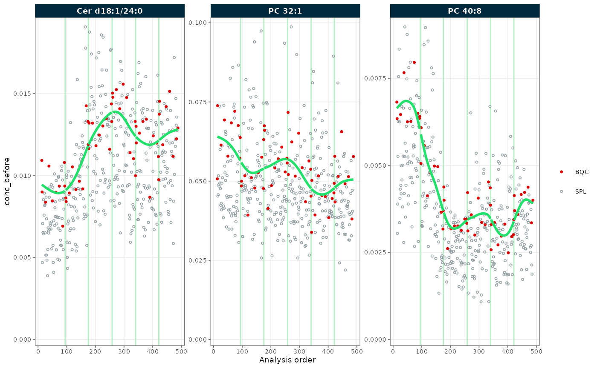
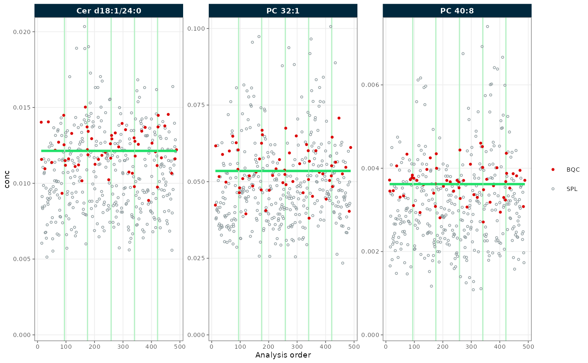
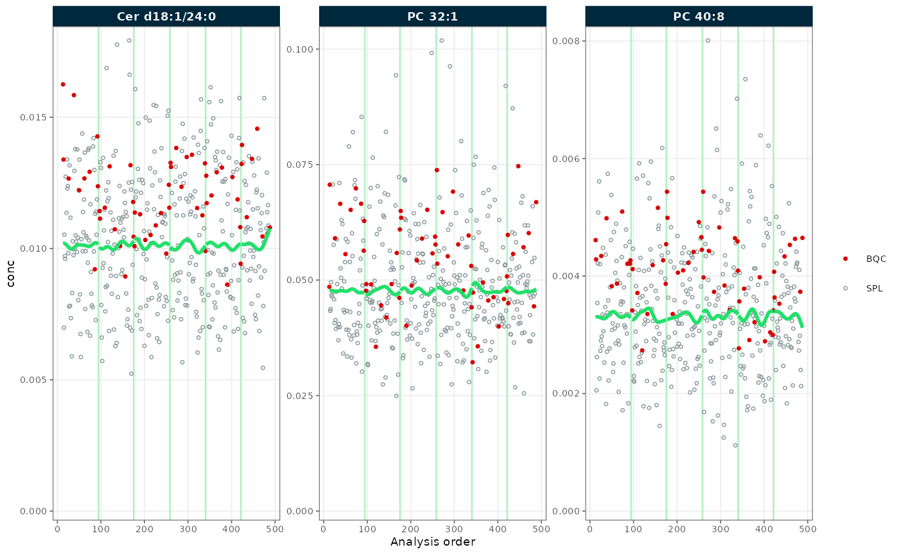
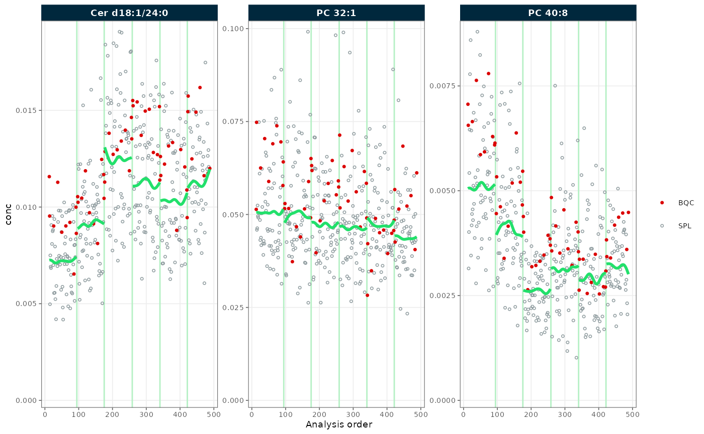
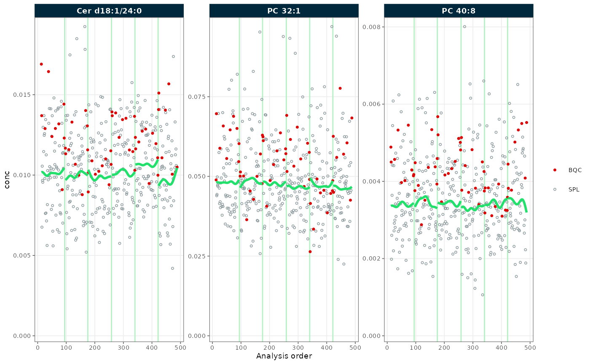
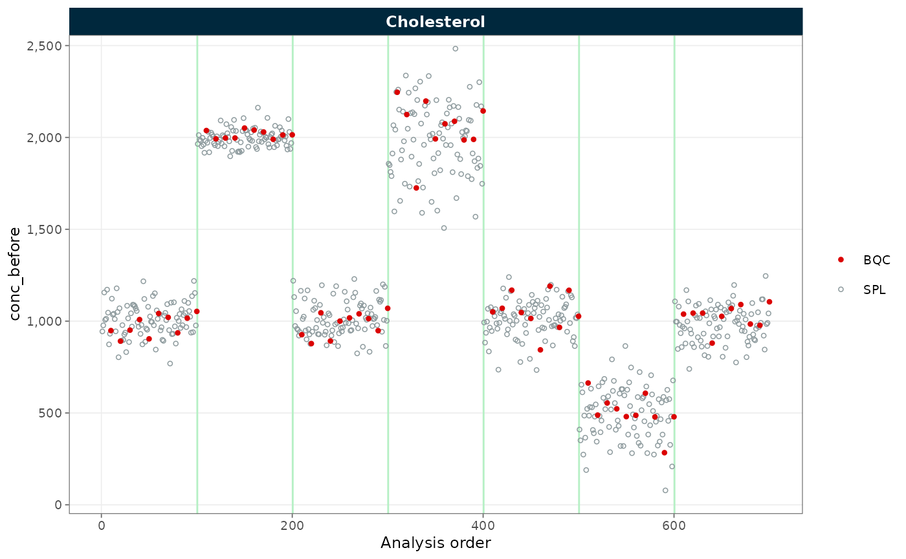
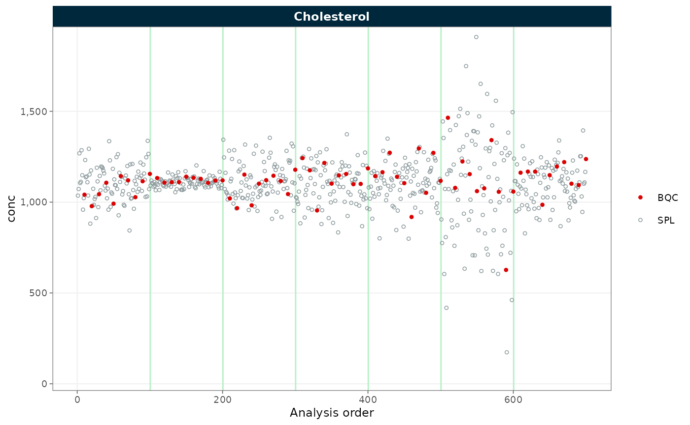
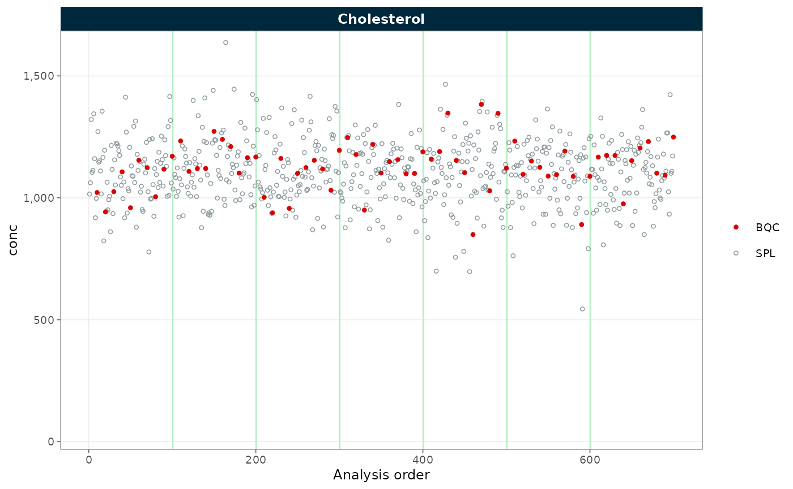

Drift and batch correction
Source:vignettes/articles/tutorial-04-drift-correction.Rmd
tutorial-04-drift-correction.RmdSignal intensities in a mass-spectrometry run drift with injection
order and shift between analytical batches. MRMhub corrects run-order
drift by smoothing a trend through reference samples, and batch effects
by median centering. Both operate on a data variable of an
MRMhubExperiment (raw intensities, normalized intensities,
or concentrations) and are fitted on QC or study samples only, never
mixed. After this tutorial you can select an appropriate correction
method for a given QC design and apply drift and batch correction in the
correct order.
1. Import data
We import pre-calculated raw concentration values from a CSV file.
Batch-wise correction requires a batch_id column; see
import_data_csv_wide() for the expected format.
library(mrmhub)
mexp <- MRMhubExperiment()
mexp <- import_data_csv_wide(
mexp,
path = "smooth-testdata.csv",
variable_name = "conc",
import_metadata = TRUE
)2. QC-based drift correction
Apply a QC-based drift correction with a cubic spline fitted through
the batch QC samples (BQC). The reported change in median
CV summarises whether the correction improved analytical precision.
mexp_drift <- correct_drift_cubicspline(
mexp,
variable = "conc",
batch_wise = FALSE,
ref_qc_types = "BQC",
recalc_trend_after = TRUE
)✔ Drift correction was applied to 3 of 3 features (across all batches).ℹ The median per-feature CV change of all features in study samples was -4.69% (range: -8.21% to 1.17%; a positive value means the CV increased). The median CV across all features decreased from 30.56% to 28.52%.
plot_runscatter(
mexp_drift,
variable = "conc_before",
qc_types = c("BQC", "SPL"),
rows_page = 1, cols_page = 3, show_trend = TRUE
)
Figure 1. Concentrations before QC-based drift correction; the fitted trend (green) follows the BQC points (red).
plot_runscatter(
mexp_drift,
variable = "conc",
qc_types = c("BQC", "SPL"),
rows_page = 1, cols_page = 3, show_trend = TRUE
)
Figure 2. Concentrations after QC-based drift correction; the BQC trend is flat.
The fitted trend (green) tracks the BQC points (red)
before correction and is flat afterwards. Flattening the
BQC trend does not, however, necessarily straighten the
study-sample (SPL) trend, since pooled QCs can differ from
the study samples in handling and matrix.
3. Sample-based drift correction
When QC samples do not represent the study-sample trend, fit the
drift on the study samples instead. Gaussian kernel smoothing is suited
to this because study samples are numerous but individually noisy;
kernel_size sets the smoothing window. The study-sample
trend is then well corrected, though for this dataset the difference
from the QC-based result above is modest.
mexp_drift <- correct_drift_gaussiankernel(
mexp,
variable = "conc",
batch_wise = FALSE,
ref_qc_types = "SPL",
kernel_size = 10,
recalc_trend_after = TRUE
)
plot_runscatter(
mexp_drift,
variable = "conc",
qc_types = c("BQC", "SPL"),
rows_page = 1, cols_page = 3, show_trend = TRUE
)
Figure 3. Concentrations after sample-based Gaussian-kernel drift correction; the study-sample trend is flat.
4. Within-batch drift correction
The corrections above span all batches. When batch effects interrupt
the drift, fit the trend within each batch by setting
batch_wise = TRUE.
mexp_drift <- correct_drift_gaussiankernel(
mexp,
variable = "conc",
batch_wise = TRUE,
ref_qc_types = "SPL",
kernel_size = 10,
recalc_trend_after = TRUE
)
plot_runscatter(
mexp_drift,
variable = "conc",
qc_types = c("BQC", "SPL"),
rows_page = 1, cols_page = 3, show_trend = TRUE
)
Figure 4. Concentrations after within-batch drift correction; residual trend differences remain between batches.
Clear trend differences remain between batches because each batch is fitted independently, so differing sample sizes and batch effects are not reconciled. A batch correction is therefore usually applied after batch-wise drift correction. Apply a subsequent batch correction by median centering to align the batches.
mexp_drift <- correct_batch_centering(
mexp_drift,
variable = "conc",
ref_qc_types = "SPL",
correct_scale = TRUE
)
plot_runscatter(
mexp_drift,
variable = "conc",
qc_types = c("BQC", "SPL"),
rows_page = 1, cols_page = 3, show_trend = TRUE
)
Figure 5. Concentrations after within-batch drift correction followed by median-centering batch correction; batches are aligned.
5. Batch-effect correction
Batch effects (systematic differences between analytical batches) are
corrected on their own with correct_batch_centering(). The
following uses a seven-batch dataset to show the effect clearly. Each
batch is centered on a reference QC type, here the study samples
(ref_qc_types = "SPL").
mexp_batch <- MRMhubExperiment()
mexp_batch <- import_data_csv_wide(
mexp_batch,
path = "simdata-u1000-sd100_7batches.csv",
variable_name = "conc",
import_metadata = TRUE
)
mexp_batch <- correct_batch_centering(
mexp_batch,
variable = "conc",
ref_qc_types = "SPL",
correct_scale = FALSE
)! Adding batch correction to `conc` data.✔ Batch median-centering of 7 batches was applied to raw concentrations of all 1 features.ℹ The median per-feature CV change of all features in study samples was -30.49% (range: -30.50% to -30.50%; a positive value means the CV increased). The median CV across all features decreased from 44.05% to 13.56%.
plot_runscatter(
mexp_batch,
variable = "conc_before",
rows_page = 1, cols_page = 1
)
Figure 6. Concentrations before batch correction; batch medians are offset from one another.
plot_runscatter(
mexp_batch,
variable = "conc",
rows_page = 1, cols_page = 1
)
Figure 7. Concentrations after median-centering batch correction; batch medians are aligned.
The batches are aligned in location, but their spread still differs.
Setting correct_scale = TRUE also equalises the variance
between batches.
mexp_batch <- correct_batch_centering(
mexp_batch,
variable = "conc",
ref_qc_types = "SPL",
correct_scale = TRUE
)
plot_runscatter(
mexp_batch,
variable = "conc",
rows_page = 1, cols_page = 1
)
Figure 8. Concentrations after batch correction with variance scaling; both location and spread are consistent across batches.
Alternative batch-correction methods (experimental)
Besides median centering, two model-based methods are available. Both are experimental and require an optional package.
ComBat (Johnson et al.
2007) applies an empirical-Bayes location and scale adjustment,
shrinking the batch estimates across features (requires the
sva package). Unlike centering and SERRF, it estimates
batch effects from all samples; pass covariates to protect
biology on unbalanced designs.
mexp_batch <- correct_batch_combat(
mexp_batch,
variable = "conc",
ref_qc_types = "SPL"
)SERRF (Fan et al.
2019) trains a per-feature random forest on the reference QCs and
removes the predicted systematic error, capturing non-linear batch and
drift effects jointly (requires the ranger package). It
suits larger panels with dense QC coverage; the implementation adapts
the malbacR reference (Leach et al.
2023).
mexp_batch <- correct_batch_serrf(
mexp_batch,
variable = "conc",
ref_qc_types = "SPL"
)6. Choosing a drift-correction method
MRMhub provides four drift-correction methods. Loess and cubic spline
are typically fitted on QC samples, Gaussian kernel on study samples; a
fourth, GAM smoothing via correct_drift_gam(), is also
available. See Drift and batch
correction (reference) for the full parameter description of all
four.
| Method | Function | Reference | Typical use |
|---|---|---|---|
| Loess | correct_drift_loess() |
QC | Frequent QC injections; robust to single outlier QCs |
| Cubic spline | correct_drift_cubicspline() |
QC | Frequent QC injections; flexible, sensitive to outlier QCs |
| Gaussian kernel | correct_drift_gaussiankernel() |
Study | Sparse QCs; large, well-randomised sample sets only |
Loess uses locally weighted regression and is less sensitive to
individual outlier QCs than a cubic spline; its span
controls smoothness.
mexp_drift_loess <- correct_drift_loess(
mexp,
variable = "conc",
batch_wise = TRUE,
ref_qc_types = "BQC",
recalc_trend_after = TRUE
)7. Export corrected data
Continue processing the corrected object with MRMhub functions, or export the corrected variable to CSV.
save_dataset_csv(
mexp_drift,
path = "drift-batch-corrected-conc-data.csv",
variable = "conc",
filter_data = FALSE
)✔ Concentration values for 498 analyses and 3 features have been exported to 'drift-batch-corrected-conc-data.csv'.Next steps
- RunScatter and PCA QC exploration: visualise run-order and batch effects
- Drift and batch correction (reference): full method documentation
- Calibration by a reference sample: normalise to a reference material